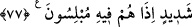

KUR’ÂN’I HİÇ
DÜŞÜNMEDİLER Mİ?
68. Onlar bu sözü (Kur’an’ı) hiç düşünmediler mi? Yoksa kendilerine, daha önce
geçmişteki atalarına gelmeyen bir şey mi geldi?
69. Yoksa Peygamberlerini henüz tanımadılar da bu yüzden mi onu inkâr
ediyorlar?
70. Yoksa onda bir cinnet olduğunu mu söylüyorlar? Hayır; o, kendilerine hakkı
getirmiştir. Onların çoğu ise haktan hoşlanmamaktadırlar.
71. Eğer hak, onların kötü arzu ve isteklerine uysaydı, mutlaka gökler ve yer ile
bunlarda bulunanlar bozulur giderdi. Hayır, biz onlara şan ve şereflerini getirdik;
fakat onlar kendi şereflerine sırt çevirdiler.
72. (Rasûlüm!) Yoksa sen onlardan bir karşılık mı istiyorsun? Rabbinin karşılığı
daha hayırlıdır. O, rızık verenlerin en hayırlısıdır.
73. Gerçek şu ki sen onları doğru bir yola çağırıyorsun.
74. Ahirete inanmayanlar ise, ısrarla yoldan çıkmaktadırlar.
75. Eğer onlara acıyıp da içinde bulundukları sıkıntıyı giderseydik, iyice
körleşerek azgınlıklarında direnirlerdi.
76. Andolsun, biz onları sıkıntıya düşürdük de yine Rablerine boyun eğmediler,
tazarru ve niyazda da bulunmuyorlar.
77. En nihayet üzerlerine, azabı çok şiddetli bir kapı açtığımız zaman, bir de